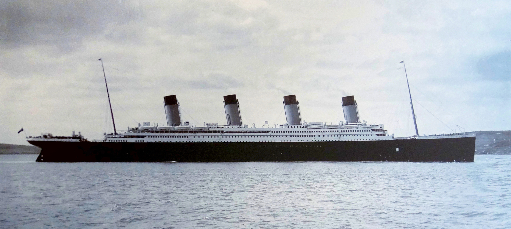
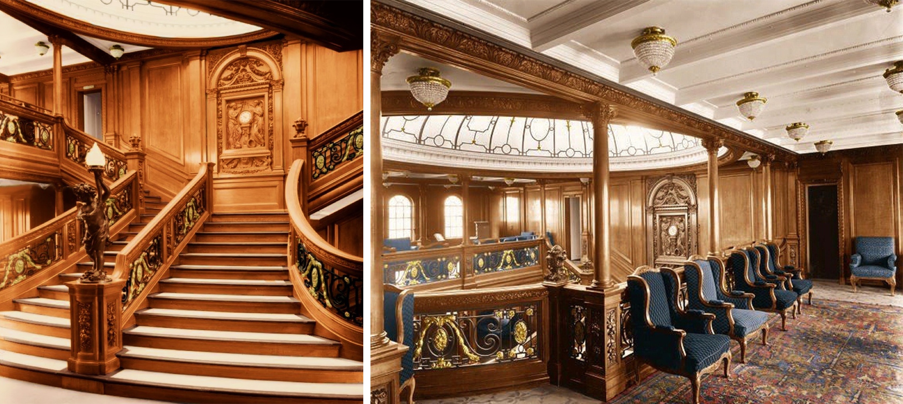
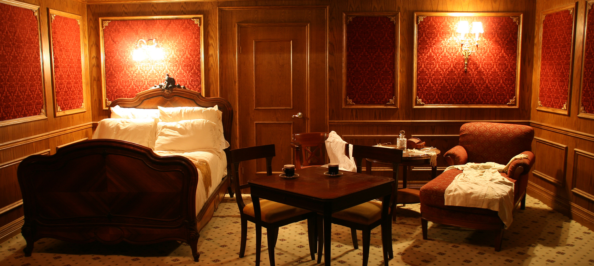
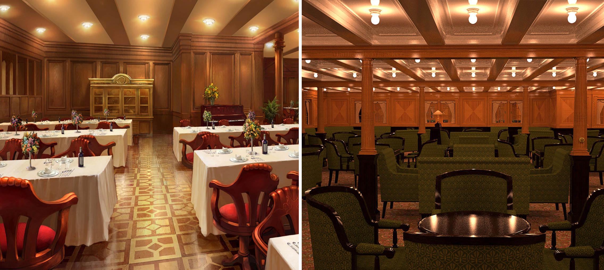
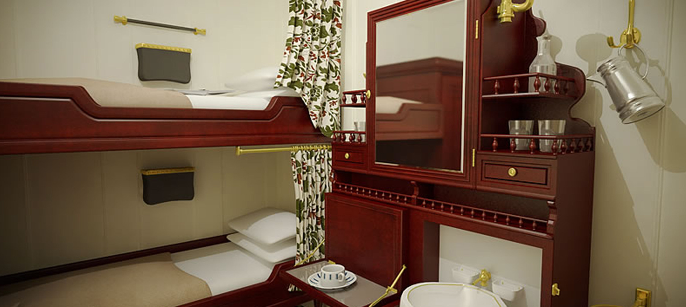
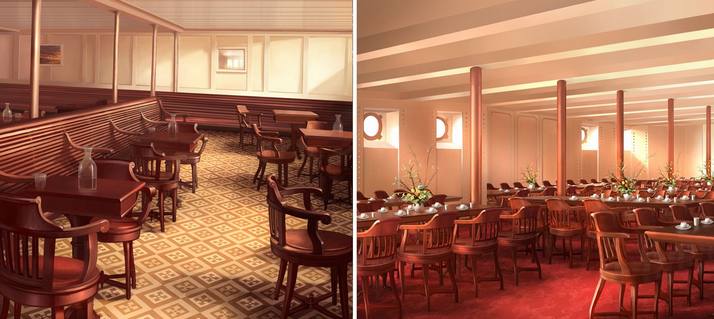
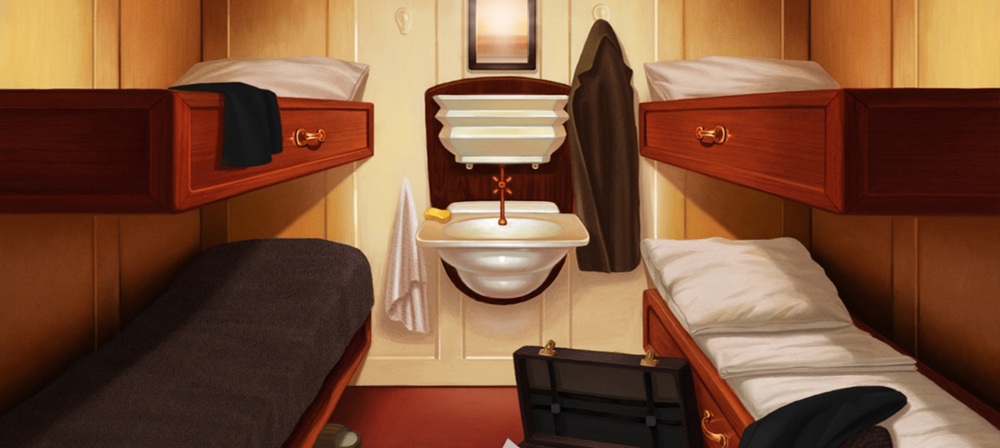
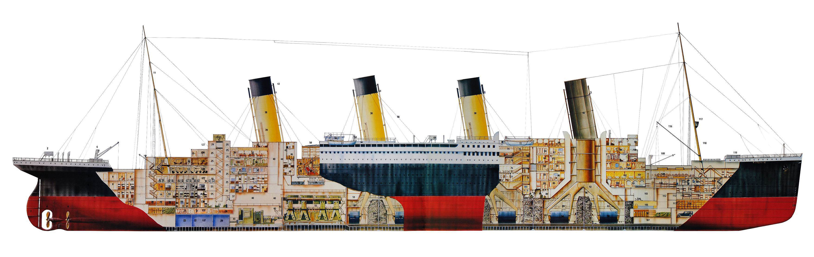

Onboard the Unsinkable Ship
Hover over the
to learn more
Click through to learn more about life aboard the unsinkable ship">







Sources: Natl Museum of Northern Ireland, Titanic Pigeon Forge, Ithaca College Library, Deviantart